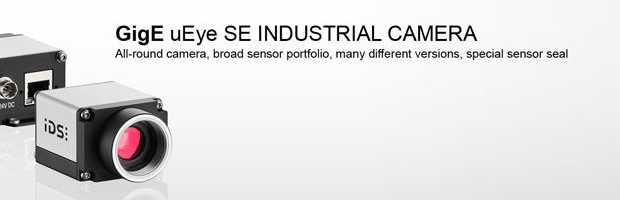

Active USB
Active USB is a universal USB3 Vision Driver and hardware-independent SDK designed to provide developers with a rapid access to USB3 Vision digital cameras. Just drop an ActiveUSB control onto the surface of your application and have it immediately support multiple USB 3.0 cameras. With ActiveUSB your application does not have to rely on a specific camera model - any USB3 Vision™ compliant camera will work with it out-of-the-box in any popular development environment, such as Visual Studio, Visual Basic (VB), Delphi, PowerBuilder, Java, Matlab, Python. You can even insert an ActiveUSB object into an MS Word or PowerPoint document and have the live video embedded right into your presentation! In addition you can:
- Acquire and display live video from one or several U3V cameras.
- Select among multiple camera sources.
- Set the desired video format and triggering mode.
- Select among several hardware and software trigger sources and trigger modes.
- Grab 8-, 10-, 12- or 16-bit per channel monochrome and color images.
- Perform automatic color interpolation of raw video generated by Bayer cameras.
- Choose the desired frame rate.
- Select the desired size and position of the scan area.
- Browse through GenICam categories and features reported by camera.
- Adjust multiple camera features in real time using built-in property pages.
- Activate automatic or one-push control over selected camera features.
- Save camera settings as user sets and reload them on demand.
- Control non-standard camera features by direct access to camera registers.
- Choose among several palettes for pseudo-color display.
- Get an instant access to pixel values and pixel arrays.
- Retrieve individual color planes from RGB images.
- Import live video into PictureBox objects.
- Overlay multi-colored custom graphics and texts on live and recorded video.
- Save images in BMP, TIFF and JPEG formats.
- Perform time-lapse capture to AVI files and image sequences.
- AVI 2.0 support with unlimited file size, selectable compression and adjustable playback rate.
- Play back AVI files and memory sequences at adjustable speed, step and direction (DVR extension required).
- Obtain timestamp information for each individual frame.
- Flip and rotate live image.
- Perform image processing on incoming frames and display them in real time.
- Apply real-time running average and integration to video frames.
- Implement built-in background (dark and flat field) correction.
- Perform adaptive hot-pixel correction.
- Perform real-time histogram and statistical analysis over a selected color component.
- User-defined pre- and post-processing of video frames.
- Built-in LUT (lookup table), software brightness, contrast and WB control.
- Anti-tearing and monitor synchronization options for eliminating display artifacts.
- Display and save images from multiple cameras using the included GigE Vision viewer.
- Interface to third party imaging applications through the TWAIN driver.
- DirectShow Video Capture (WDM) interface to third-party video-recording applications.
Ability to run multiple copies of ActiveUSB in one application guarantees independent adjustment and seamless parallel acquisition from multiple USB3 Vision cameras in both the design and run-time modes, under Windows 2000, XP, Vista, Windows 7, Windows 8 - both on 32- and 64-bit platforms.
ActiveUSB setup includes extensive documentation and source code samples for Visual C++, Visual Basic, HTML, VB.NET, C#, Delphi, Matlab, Python and DirectShow demonstrating live video capture, image processing and analysis, storing acquired images in different formats, full control over camera settings, and many more.
Ability to run multiple copies of ActiveGigE in one application guarantees independent adjustment and seamless parallel acquisition from multiple GigE Vision cameras in both the design and run-time modes, under Windows 2000, XP, 2003, Vista, Windows 7, and Windows 8 on 32- and 64-bit platforms.
ActiveGigE setup includes extensive documentation and source code samples for Visual C++, Visual Basic, HTML, VB.NET, C#, Delphi, Matlab, Python and DirectShow demonstrating live video capture, image processing and analysis, storing acquired images in different formats, full control over camera settings, and many more.